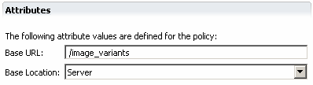

Asset groups are a convenient way of defining the location of a set of variants for subsequent use in components.
In the Asset Group editor you can specify asset group attributes, and then use the asset group name in the Content section of a component editor.
You can define one of three values of asset group location; server or device. A server location specifies that a variant in the group is at a location on a server. A device location specifies that the variant will be found on a device. You can also provide a Base URL to prefix the filename of the variant. If you choose the default setting, MCS uses server as a default.

When you select an Asset group name in a component editor, MCS prefixes the filename in the component URL with the Base URL value from the asset group.
If you have not defined an asset group, MCS obtains the prefix from the assets section of the MCS configuration file. If neither the configuration file prefix, nor the variant group prefix is defined, MCS uses the variant URL value by itself.
Related topics
Components and variants
Adding an asset group
Resolving variant URLs